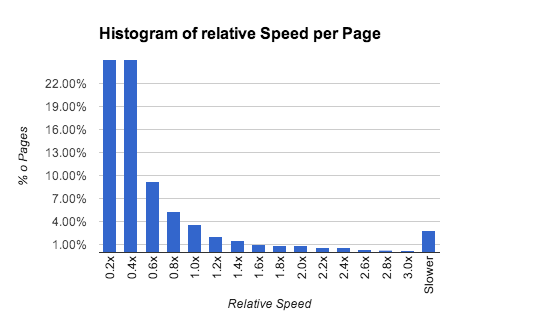

大家好，我是 Thorben。目前是挪威首都奧斯陸 (Oslo) 的「Opera Software」員工。我不在 Mozilla 上班，又為何今天在 Mozilla Hacks 上撰文呢？你可能知道《Opera》瀏覽器並沒有預設的 PDF 檢視器，而我們也想改變這一點。所以幫 Opera 加個預設的檢視器怎麼樣？再跟 Adobe 或 Foxit 買個檢視器？或是自己動手做呢？
介紹 PDF.js
在下決定之前，先簡單了解一下 PDF.js。這個專案是想透過 JavaScript 與 Canvas，在瀏覽器中建構全功能的 PDF 檢視器。這聽起來有點誇張，但卻合情合理。瀏覽器應該要能順利處理文字、圖片、字型、向量圖素等等；而這些也是 PDF 檢視器能妥善進行的作業。PDF 中的繪圖指令都屬於 Postscript 的子集，其實跟 Canvas 功能的差異不大。另外就是安全性也沒有什麼問題。使用 PDF.js 就像開啟其他網站一樣安全。
開始打造 PDF.js
所以我找了 Christian Krebs 和 Mathieu Henri 一同開始研究 PDF.js，也確實留下深刻印象：PDF.js 設計妥善且執行速度不差，程式碼的大部分看來也已經可用無虞。
但我們還是發現了一些問題，主要是具備大量圖片的 PDF 檔案會發生效能問題。為了要能進一步了解 PDF.js 並深入開發專案，就應該先解決我們發現的主要問題。我們因此更了解整個專案，也發現其所具備的絕佳潛能。幾番努力之後，我們更訝異於 PDF.js 所提升的效能。
測試 PDF.js 的效能基準
當然，我們自己的測試作業可能導致錯誤的效能印象分數。我們試著找到檔案超大、大到詭異，甚至難以描繪的 PDF 檔案，大多數人幾乎不會接觸到的 PDF 檔案。你實際用 PDF.js 觀看大部分 PDF 檔案時都能運作無虞，但這又要怎麼進行測試呢？
你可以在網路上找找最常見的 PDF，就是你一般最常接觸到的 PDF 檔案，再測試其效能基準。各個 PDF 檔案截出一幅大概 5 ~ 10k 大小的截圖就夠了。接著就該考量 PDF 檔案來源問題。
這時搜尋引擎就很有用了。只要限定搜尋 PDF 檔案，即可取得與關鍵字最高度相關的檔案，其次就是高瀏覽次數的 PDF 檔案。如果你要使用最常見的搜尋關鍵字，那最後別忘了加上適合的近似 (Approximation) 演算法。
要測試這麼多 PDF 檔案的效能基準是項大工程。我找了幾台舊電腦再搭配不錯的伺服應用程式，用以支援這些電腦的相關作業。目前的 Repository 中約有七千筆 PDF 檔案，而最後約花了八個小時測得第一版的 PDF.js 效能基準。
測試結果
略過這些 PDF 到底有哪些漂亮的圖片不談。先看看下圖：

這張圖幾乎可一眼看完我們最感興趣的結果。該直方圖顯示了平均頁面處理時間的相對關係。在檢視 Tracemonkey Paper (啟動 PDF.js 時所看到的預設 PDF 檔案) 時的使用者經驗還不錯，即使我的測試作業速度慢上 3 ~ 4 倍都還能接受。也就是說，超過 96% (去掉當機的 PDF 檔案) 的受測頁面都能達到好的使用者經驗。這效果真的不錯！如果改成比較簡單的圓餅圖 (以百分比計)：

你可能注意到一個小地方：在我們測試期間，約有 0.8% 的 PDF 檔案讓 PDF.js 當掉了。我們仔細檢查這些檔案，裡面至少有三分之一毀損嚴重，可能任何 PDF 檢視軟體都無法再將之開啟。
我們必須另外記得一點：這些都是沒有其他對照組的獨立結果。網路上還是有一些很複雜的 PDF 檔案，甚至連原生的 PDF 檢視軟體都沒辦法妥善並迅速開啟這些檔案。我們測得速度最慢的 PDF 檔案，是葡萄牙首都里斯本 (Lisbon) 超級詳盡的公眾運輸系統向量地圖。最後就算用《Adobe Reader》開啟這個檔案也真的有夠慢！
結論
從這些結果來看，我們可說 PDF.js 很適合作為《Opera》瀏覽器所預設的 PDF 檢視器。但目前若要能將 PDF.js 妥善整合到 Opera 中，還有很多事等著我們完成。不過我們也正嘗試相關整合。另外順帶一提：這個附加元件可搭配預設的 Mozilla 檢視器，進而添增 PDF.js。而我說的「妥善整合」也可能是開發另一個全新的檢視器。感謝 Mozilla！很期待能和你們一同研究 PDF.js！
附註：現在已經釋出計算系統的程式碼與相關結果。請大家看看並告訴我們你的想法！
再附註：如果有任何人任職於大型搜尋引擎的公司，如果願意提供實際達 10k 的常用 PDF 檔案，那就太好了！
接下來呢？
我上面所提到的計算框架，也能用在其他許多有趣的程式中。我們下一步會嘗試根據字型格式、圖片格式，或其他類似方式，進而分類 PDF 檔案。你可以先隨意取得 PDF 檔案並測試新的功能。我們也想了解 Postscript 中較常用的繪圖指令，讓我們能針對最常見的指令進行最佳化；就如我們對瀏覽器中的 HTML 所做的相同。看看我們實際還能做什麼吧。
原文連結：How fast is PDF.js?